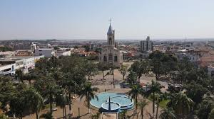

Conclusão
- Mirassol mostra que tamanho não define conquistas.
- Cresceu com base em educação, cultura e esporte.
- É exemplo de orgulho, união e superação.

Concluimos que:
A trajetória de Mirassol-SP revela a força de uma cidade que soube transformar desafios em oportunidades. Desde sua origem, marcada pelo desbravamento das matas e pela união de pioneiros visionários, até sua consolidação como polo regional, Mirassol construiu uma identidade baseada no trabalho, na fé e na inovação. O desenvolvimento urbano planejado, os investimentos em educação, os avanços na infraestrutura e a diversificação econômica demonstram o compromisso da cidade com o bem-estar de sua população. Ao mesmo tempo, a preservação das tradições culturais e o fortalecimento da identidade local mostram que Mirassol valoriza suas raízes sem deixar de olhar para o futuro. Hoje, Mirassol é exemplo de cidade que cresce com responsabilidade, que educa com qualidade e que acolhe com orgulho. Seu povo, herdeiro da coragem dos fundadores, continua a escrever uma história de progresso, inclusão e esperança. Com bases sólidas e visão de futuro, Mirassol segue firme em sua missão de ser uma cidade cada vez mais justa, próspera e inspiradora para as próximas gerações.